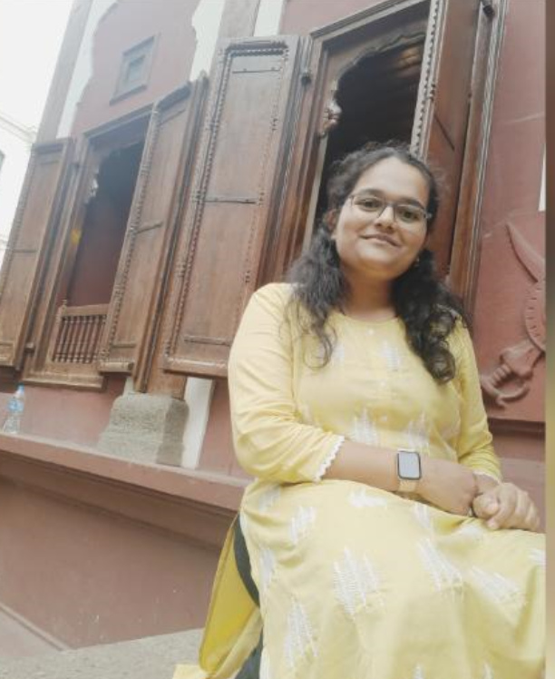

Our Team
-

Mitali Jayale
Travel Blogger
-

Yukta Ingole
Travel Consultant
-

Aditi Shegokar
Tour Guide
Our Story
Welcome to our travel advisory website, where exploration knows no bounds. here we are Mitali , Yukta and Aditi , and we're proud to call the vibrant city of Pune our home. Our journey began with a shared passion for discovering the world's hidden gems, sampling diverse cuisines, and experiencing the rich tapestry of cultures that make our planet so beautiful.
Pune, with its rich history, diverse culture, and proximity to stunning destinations, has been our source of inspiration. This city has taught us to appreciate both the tranquility of the Western Ghats and the bustling markets of the old city. It's in this backdrop that we decided to create a platform to share our love for travel and to help fellow wanderers embark on their own memorable journeys.
Our mission is simple: to curate extraordinary travel experiences, provide insightful guidance, and offer expert advice to make your travel dreams a reality. We're here to be your compass, steering you towards the most enchanting destinations, and your storyteller, unraveling the hidden narratives that make each place unique.
Join us on this exhilarating adventure as we bring the world to your fingertips, one destination at a time. Whether you're a seasoned globetrotter or a novice explorer, our travel advisory website is here to cater to your every need. Let's embark on this remarkable journey together.